Estradas, abastecimento de água, drenagem, edifícios e naves industriais – com equipas experientes, equipamento próprio e o rigor de um grupo com mais de 20 anos de construção.
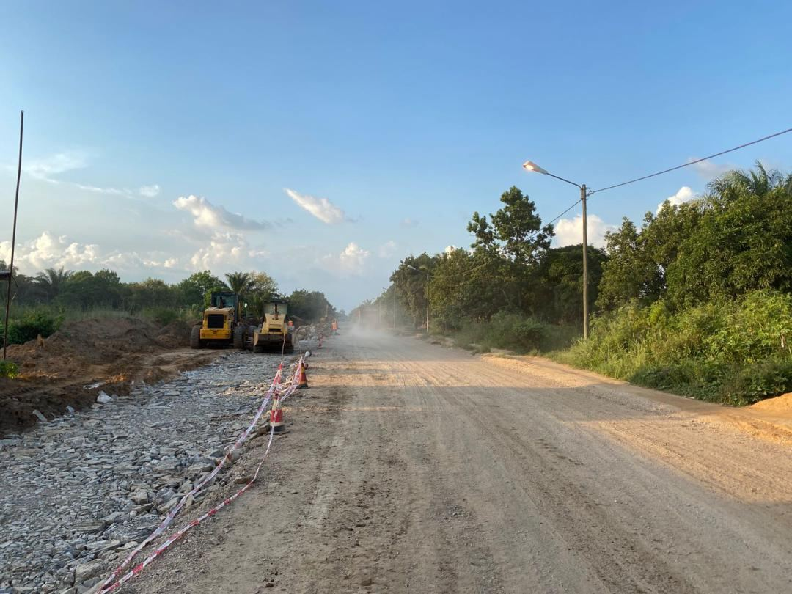
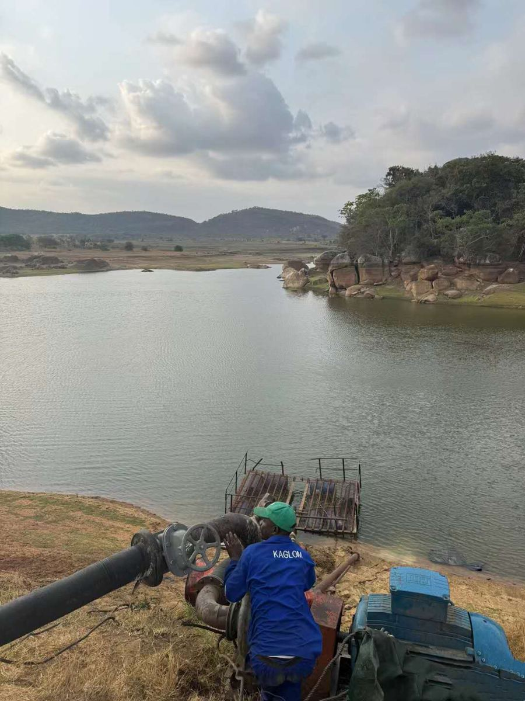
A WANLI Engenharia & Construções, Lda pertence a um grupo de construção que iniciou a sua actividade em Guangzhou (China) em 2002 e que concluiu mais de 50 grandes projectos de infra-estruturas – estradas e drenagem, edifícios, obras portuárias, eléctricas e de abastecimento de água.
Em Moçambique desde 2020, com sede em Maputo, a WANLI é titular de Alvará de 7.ª classe, que lhe permite executar obras de qualquer especialidade, para entidades públicas, projectos financiados por parceiros de cooperação e clientes privados.
Combinamos quadros técnicos moçambicanos que conhecem a realidade local com profissionais de visão internacional, para entregar cada obra com qualidade, segurança e dentro do prazo.
Da concepção à entrega da obra, com equipas e equipamento próprios.
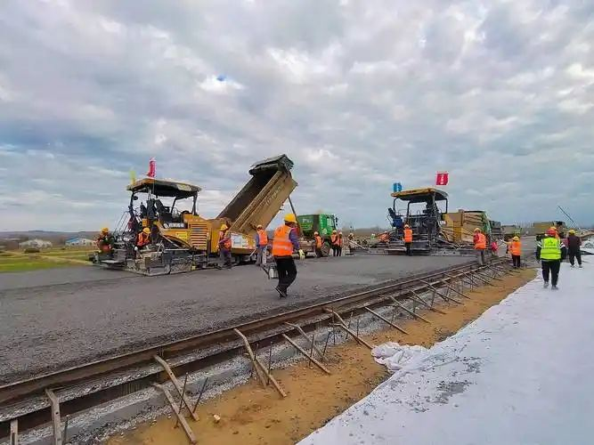
Terraplenagem, pavimentação, passeios em pavê, drenagem pluvial e arranjos urbanos.
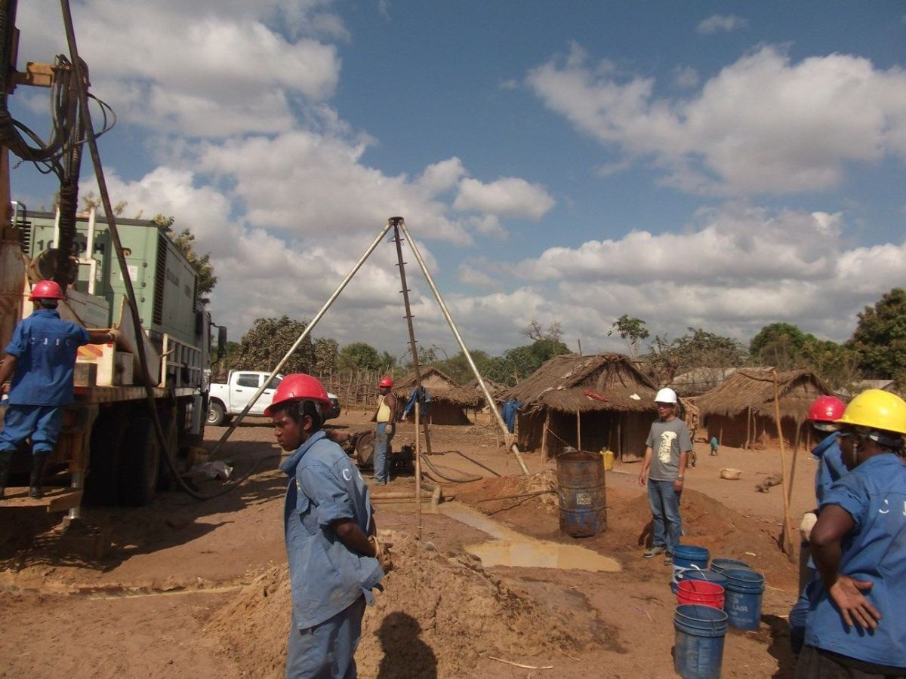
Furos, condutas adutoras, reservatórios, estações de bombagem e de tratamento.
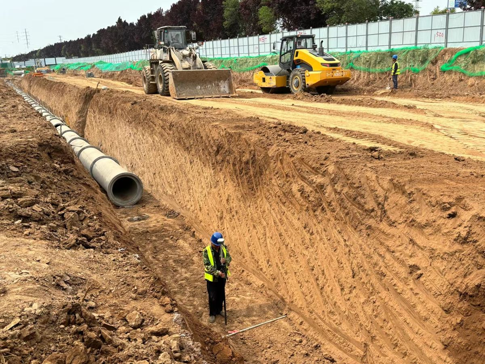
Colectores, valas, aquedutos e redes de saneamento com tubagem de betão e PEAD.
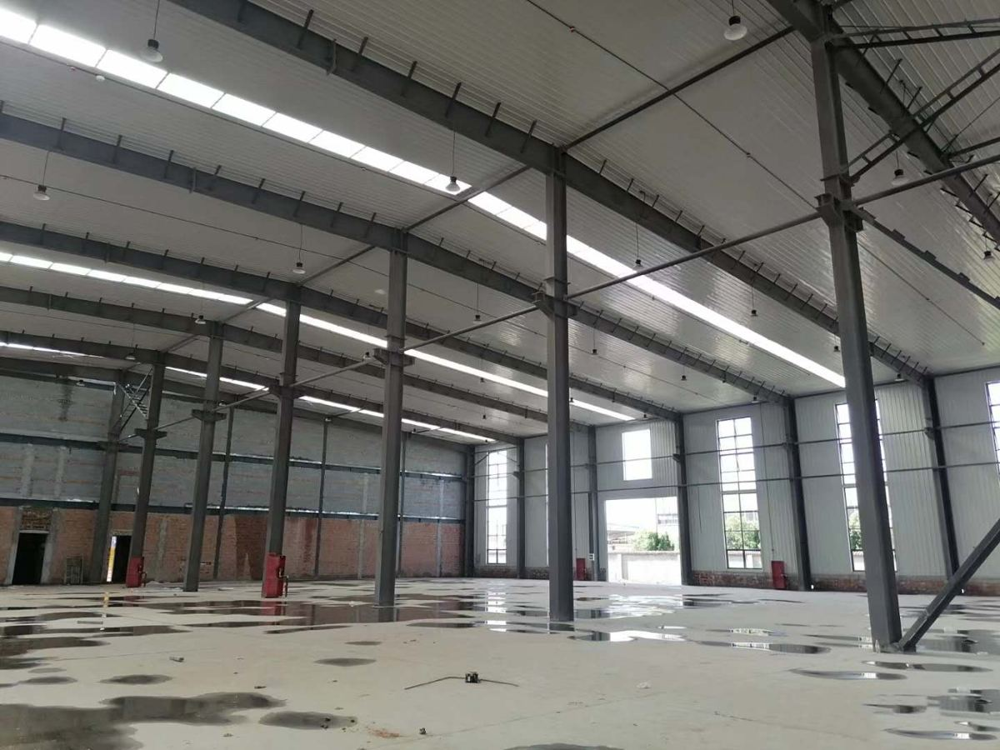
Fábricas, armazéns e coberturas metálicas – fornecimento, montagem e acabamentos.
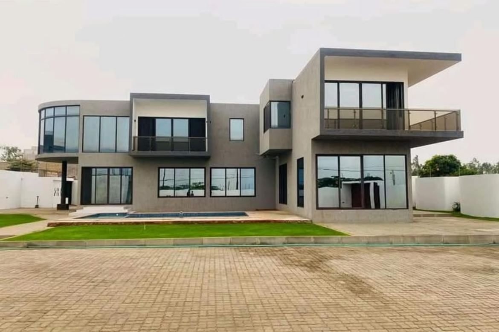
Habitação, escritórios, hotelaria, postos de abastecimento de combustível e remodelações.
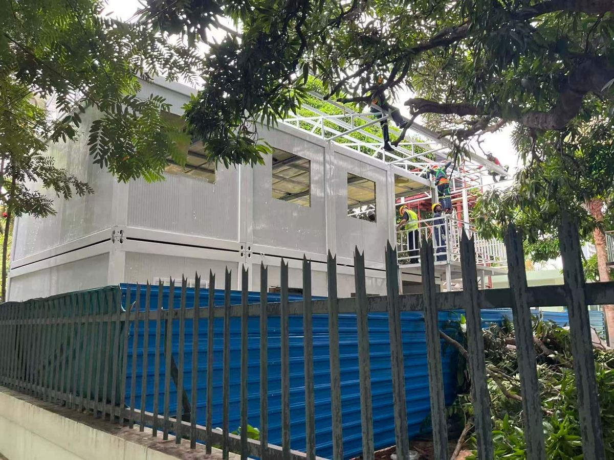
Compra e importação de materiais e equipamentos da China e da África do Sul, desalfandegamento e entrega em obra.
Projectos executados e em curso em várias províncias de Moçambique.
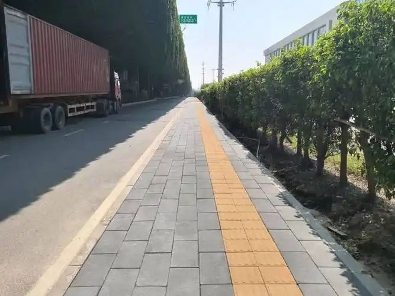
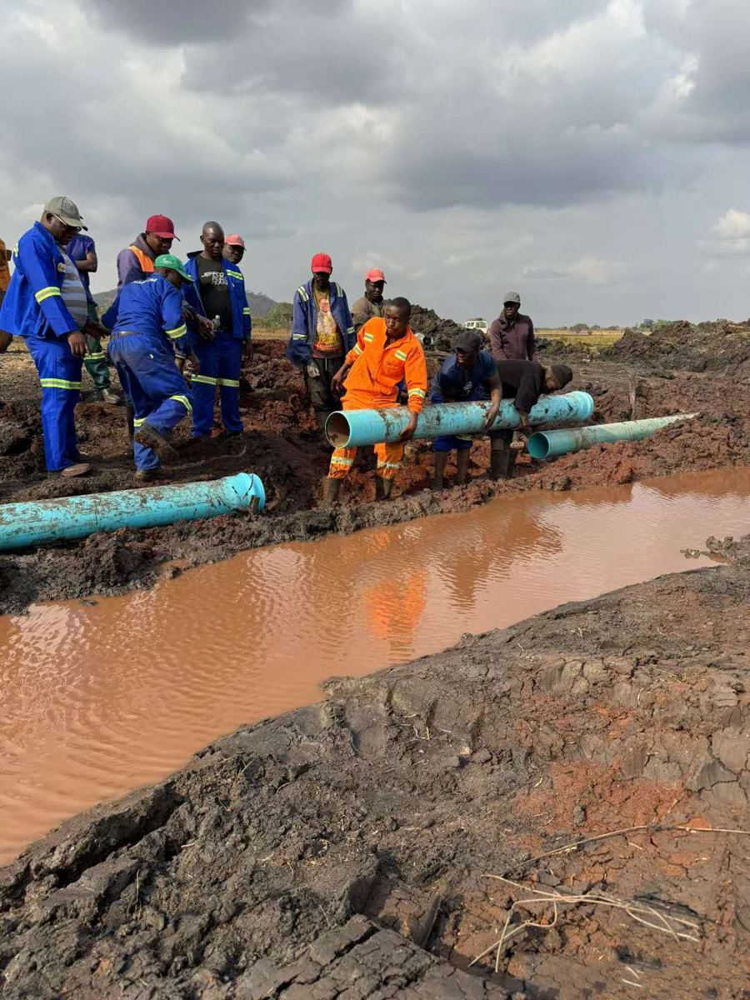
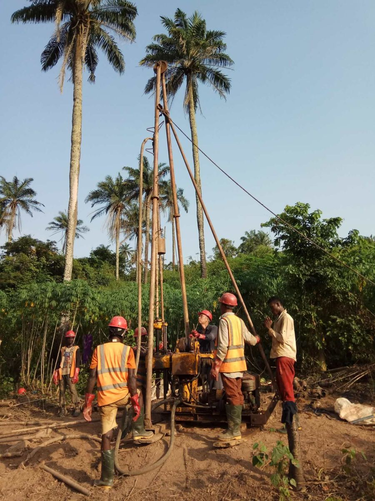
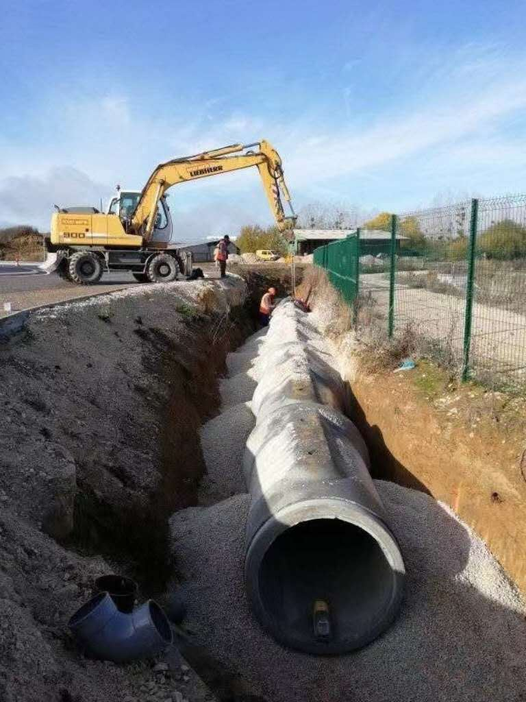
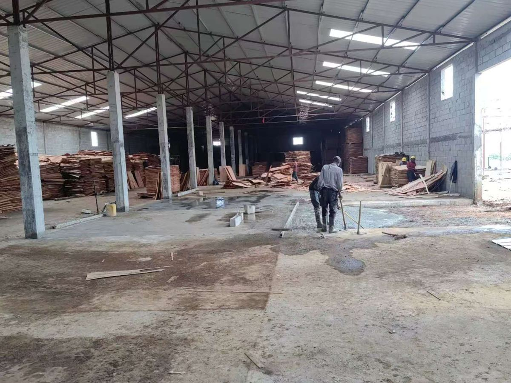
Equipas técnicas, equipamento próprio e uma cadeia de fornecimento organizada permitem-nos executar várias obras em simultâneo.
Organizamos rapidamente equipas, equipamento e materiais para obras em qualquer província.
Engenheiros civis, arquitecto, técnicos e encarregados com ampla experiência em gestão de obras.
Procedimentos de gestão de qualidade, ambiente e saúde e segurança no trabalho em todas as frentes.
Parcerias com os principais fornecedores nacionais e importação directa da China, África do Sul e Portugal.
Com sede em Maputo e armazém na Província de Maputo, a WANLI acompanha obras e clientes em todo o país.
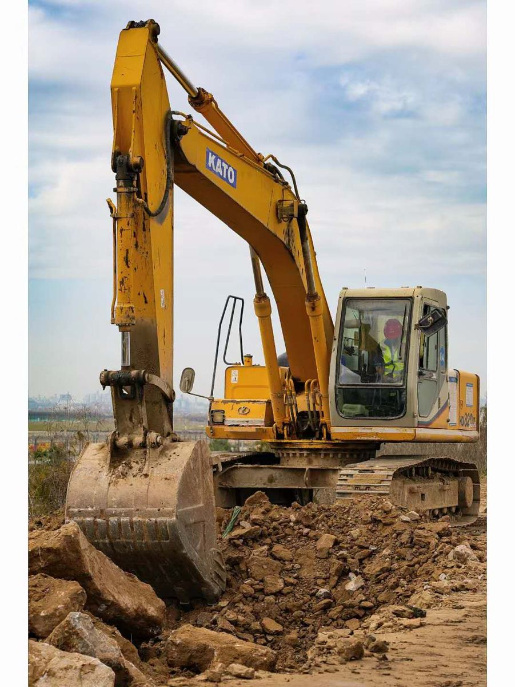
Documentação em dia para concursos públicos e contratos com financiamento internacional.
Empreiteiro de obras públicas e construção civil – qualquer especialidade.
Inscrição activa para contratação pública.
Finanças, INSS, Tribunal Judicial e Estatística.
Fornecedores e parceiros: Builders Warehouse, Ferragem Maputo, Somofer, Construa, Sotubos, CIM, CIN, BSI Steel, entre outros.
Envie-nos o seu caderno de encargos ou pedido de cotação – respondemos com rapidez.
Av. Ahmed Sekou Touré, n.º 247, R/C
Bairro Polana Cimento A, Maputo
401194436